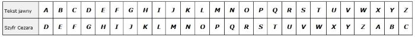

Szyfr Cezara
Michał Pilarski
Monika lubi historię i szyfrowanie. Monika chciałaby napisać program, który szyfruje tekst szyfrem Cezara. Niestety Monika nie potrafi programować w Pythonie. Monika prosi Cię o pomoc. Napisz program, który zaszyfruje tekst szyfrem Cezara. Szyfr Cezara to jeden z najstarszych szyfrów. Polega on na zastąpieniu każdej litery alfabetu literą przesuniętą o jakąś określoną liczbę. Przykładowo zamieniamy A na D (przesunięcie o 3), B na E itd.
Przykładowym alfabet po przesunięciu o 3
Napisz funkcję szyfr z parametrami napis i klucz. Napis będzie zawsze złożony z małych liter alfabetu łacińskiego bez polskich znaków.
Funkcja powinna zwrócić napis, w którym każda litera jest przesunięta o podany klucz.
Jeśli potrzebujesz pomocy skorzystaj z podpowiedzi: omówienie zadania